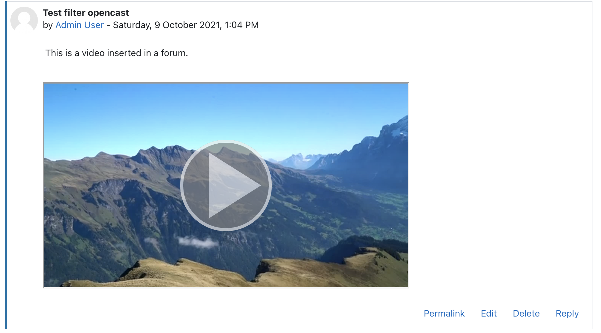

Opencast Filter Plugin
The Opencast Filter plugin enhances the way Opencast videos are displayed in Moodle by automatically embedding them within an iframe.
When a user adds the video in the text editor and selects an Opencast video via Opencast Repository video selection form, this filter plugin replaces the link with an iframe that loads the Paella Player, ensuring a seamless video playback experience within Moodle.
It is important to note that the filter itself does not modify the embedded content; it simply processes the links created by the repository and displays the appropriate video.
For more details on configuring and using the Opencast repository, refer to the Repository Opencast documentation.

Installation
The Opencast filter plugin can be obtained from the following sources:
-
The GitHub repository, which provides the latest releases, source code, Roadmap and current developments.
-
The Moodle plugins directory, offering a convenient "Official" installation package directly within Moodle.
Requirements
The following plugins are required for full functionality:
- Opencast API plugin (tool_opencast)
- Opencat activity plugin (mod_opencast)
- Opencast repository plugin (repository_opencast): While the filter can be installed without this plugin, it is required to enable teachers to insert Opencast videos into the text editor.
Configuration
For detailed configuration instructions, refer to the settings page.